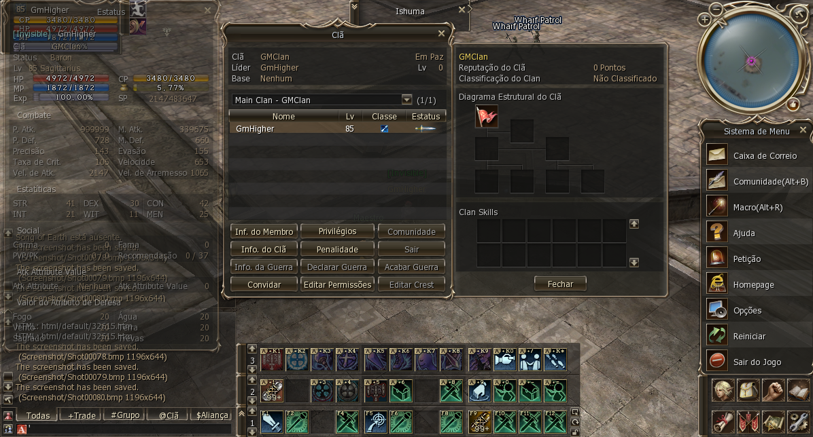

Portifólio > Projetos > L2J Private Server
Informações
Esta foi uma experiência que tive como administrador de um jogo MMORPG online chamado Lineage II,
este é um jogo emulado em java na crônica High Five, onde os players nascem nas cidades de suas respectivas
raças (Human, Elf, Dark Elf, Orc, Dwarf e Kamael) e devem buscar aumentar seu nivel de poder através de Skills, buffs,
Armas, Armaduras e Jóias conquistando Fortalezas e Castelos com seu clan. A maioria dos servidores privados são voltados
ao PvP (Player vs Player), onde o player pega nível facilmente mas demora um pouco pra tornar seu personagem 100% completo,
o maior diferencial deste projeto foi o equilibrio regulado para que não fosse tão fácil tornar seu personagem completo e
ao mesmo tempo trazendo a nostalgia de fazer as coisas à moda antiga procurando por NPCs onde precisam dos itens ao invés de um
NPC central que faz tudo, outro grande diferencial foram as falas dos NPCs e quests traduzidas para incentivar o player a fazer
as missões importantes do jogo para a evolução do seu personagem.
Neste projeto tive que administrar sozinho todo o conteúdo do projeto, além de dministrar a monetização através de
ferramentas do site próprio, também foi necessário consertar bugs no datapack e no client do jogo rapidamente,
administrei também a proteção do servidor, do site e banco de dados do jogo, passando por dificuldades como por exemplo,
- "O que eu posso vender que fará o player comprar de novo sem fazer com que o player que não gasta dinheiro se sinta prejudicado?"
- "Como fazer eventos que atraiam novos players para o jogo valendo itens que parecem trazer vantagem ele mas que não afetam o
personagem a ponto de ele ter vantagem sobre outros players?"
- ""
Algumas fotos do projeto
Algumas janelas traduzidas




Marcando guerra contra uma Fortaleza


Missão contra o Grand Boss Antharas


Missões de Four Sepulcher (Quatro Sepulcros) e Imperial Tomb (Tumba Imperial)